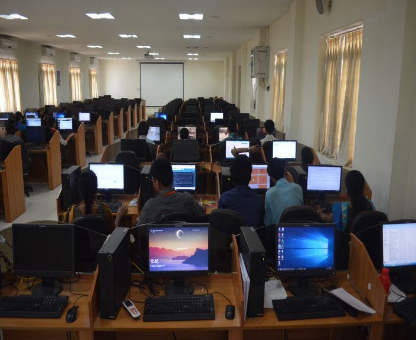
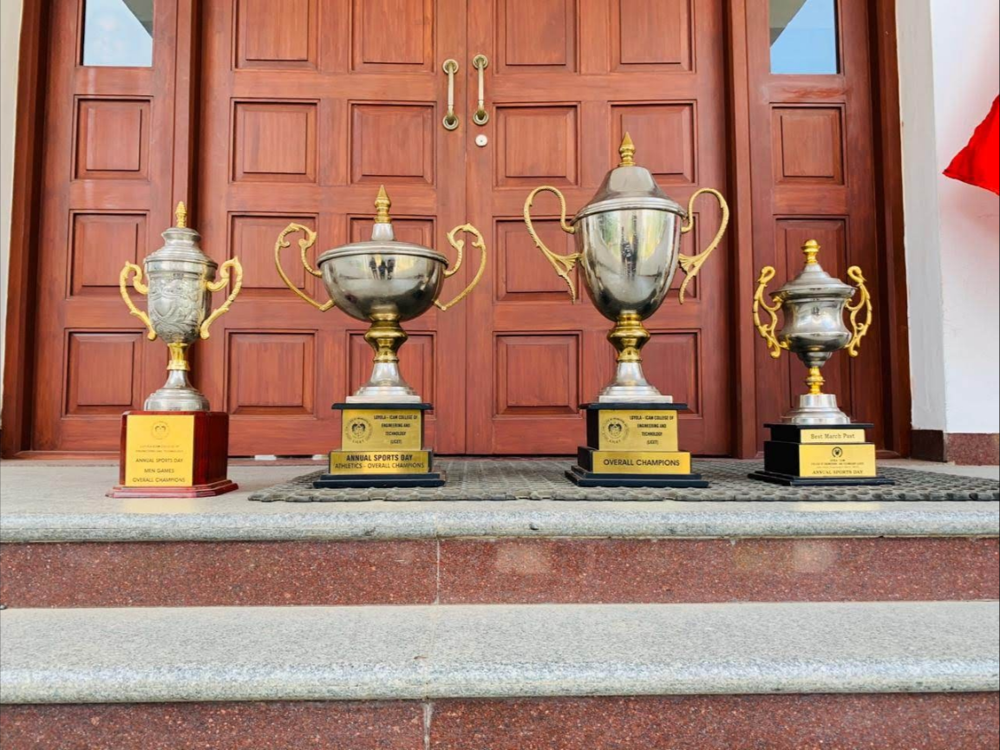

Dr.R.Juliana is the Professor and Head of the Information Technology Department.

The department has a vibrant and active faculty who are continually updating their knowledge and skills through numerous quality improvement initiatives. The students are provided with every modern facility and design tool they will need to complete their projects. To gain valuable experience, students are given intensive laboratory assignments.Students of IT Department are placed in various top MNCs like Infosys,IBM, Tech Mahindra, Accenture, Mind Tree, Samsung R&D, EPAM, Deutsche Bank of Singapore etc., for deserving & esteemed packages of more than 2.4Lac to 5 Lac per annum. The IT department has significant role in trainingstudents of entire Institute to secure the jobs in software field.

The Department transforms and accelerates the students to engage in Government initiatedcompetitions like Smart India Hackathon, National level IIT projects,winning laurels for the department and college, proving that our students
can be expert learners and provide solutions for the global community.Theinstitute in general and Department of IT in particular has uncompromisingdiscipline and flawless execution of academic policies, which makes theTeaching-Learning environment conducive for all types of students to fulfiltheir dreams.
To provide a practice oriented methodology with access to contemporary knowledge in Information Technology for the betterment of the society.To prepare students for competent careers in Information Technology through innovation, team spirit, ethics and entrepreneurial skills. WeNurture And Grow Your Soft Skills.Talent is one of the most valuable assets that you can possess - makes sense, right? In the competitive, global workplace, almost anyone can develop skills, but talent defines your true potential – the internal, natural ability to do something well as you integrate your education, training, innate gifts, experiences, emotional intelligence, and purpose. How To Build A Consistent Personal Brand To realize and maximize potential, the holistic approach of assessment is a key factor to define your talent and chart opportunities for it to develop.
Studying engineering brings prestige .Graduates will possess the ability to apply their technological skills to comprehend and analyze complex problems to design and implement the feasible solutions. Do not forget the prestige that comes with studying engineering. Non- engineers will be like “wow” when they hear that you are an engineer.Everyone knows how much effort is required to qualify as an engineer. They are also well aware of the sacrifices engineering students have to make during their studies. So the element of respect comes naturally.One doesn’t have to be an expert to see how the technology has changed the concept of each and everything by making it more profitable, efficient,safer, and simple.
The expectation of the parents is placement as the culmination of engineering studies. LICET management considers placement training as leadership formation to engineer a just society. The Placement Cell takes all efforts to place LICET students well but the cooperation of the students and parents are essential in achieving the common goal.IT students are formed not as employment seekers but employment creators. They are helped to imbibe the following propelling dynamic spirit: